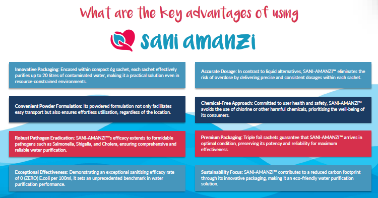
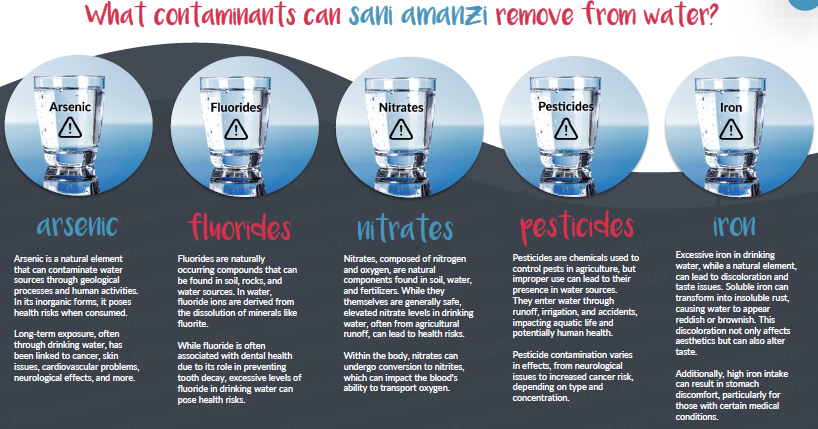
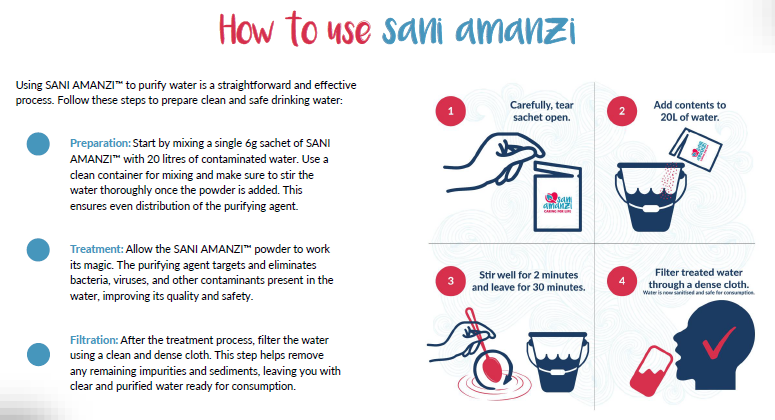
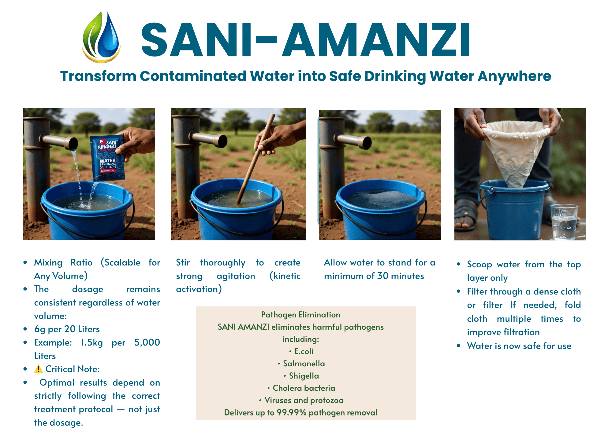
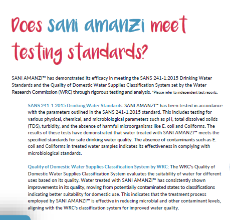
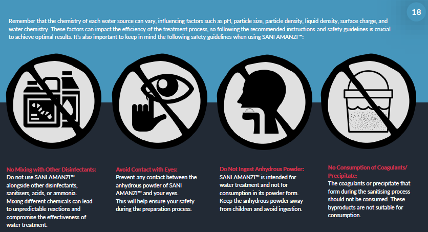
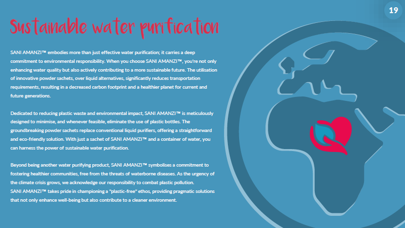

Safe Drinking Water Solutions For Communities, Governments & Emergency Response
SANI AMANZI™ is a scalable water purification solution designed to support safer drinking water access in rural communities, disaster response environments, humanitarian operations and regions facing water insecurity.
Portable · Scalable · Emergency Ready

Access To Clean Water Saves Lives
Unsafe drinking water remains one of the leading causes of preventable disease worldwide.
Millions of people across Africa, Asia and developing regions continue to rely on untreated water sources that expose communities to harmful pathogens, bacteria and contamination.
Waterborne diseases continue to place pressure on:
- public health systems
- schools
- communities
- healthcare infrastructure
- humanitarian organisations
Ubuntu Life Resources supports scalable clean water initiatives through SANI AMANZI™ water purification solutions.
What Is SANI AMANZI™
SANI AMANZI™ is a point-of-use water purification solution developed to help transform contaminated water into safer drinking water through a structured purification process.
Each lightweight sachet treats up to 20 litres of contaminated water, making the product suitable for:
- households
- rural communities
- disaster relief
- schools
- NGOs
- emergency response operations
- humanitarian deployment
- institutional programs
The compact sachet format allows simplified transportation, scalable distribution and rapid deployment into remote or water-stressed regions.


Why SANI AMANZI™ Stands Apart
- Compact Sachet Technology — easy to transport and distribute.
- Accurate Dosage — each sachet delivers consistent treatment ratios.
- Chlorine-Free Approach — supports safer water treatment without chlorine taste and odour.
- Strong Pathogen Reduction — designed to support the reduction of harmful contaminants and microorganisms.
- Scalable For Large Populations — suitable for both household and institutional deployment.
- Sustainable Solution — reduces transport requirements and plastic waste compared to bottled water distribution.
Designed To Address Waterborne Risks
SANI AMANZI™ supports treatment processes associated with harmful bacteria, microbial contamination, suspended solids, waterborne pathogens and contaminated water sources.
Potential contaminants may include:
- arsenic
- nitrates
- fluorides
- pesticides
- iron contamination
Water quality challenges differ across regions and water sources, requiring scalable treatment support systems.

Chlorine-Free Water Treatment
Unlike many traditional water purification systems, SANI AMANZI™ uses a chlorine-free treatment approach.
This helps avoid chlorine taste, strong odours and chemical aftertaste while still supporting effective water purification processes.
The result is improved usability and better drinking acceptance across communities and households.
Simple Water Treatment Process
- Step 1: Add 1 sachet to 20 litres of contaminated water.
- Step 2: Stir thoroughly to create strong agitation.
- Step 3: Allow water to stand for a minimum of 30 minutes.
- Step 4: Filter treated water through a dense cloth before use.
Important: Optimal performance depends on correct dosage, proper agitation, full settling time and correct filtration protocol.

Scalable Water Treatment
| Water Volume | Recommended Dosage |
|---|---|
| 20 Litres | 6g |
| 1,000 Litres | 300g |
| 5,000 Litres | 1.5kg |

Independently Evaluated Performance
SANI AMANZI™ has undergone independent laboratory testing focused on microbiological contamination, E.coli reduction, coliform reduction, water quality improvement and treatment effectiveness.
Testing references include Aquatico, Waterlab, Mérieux NutriSciences and BioScience.
Results demonstrated strong reductions in microbial contamination following treatment.
Emergency Response & Water Security
In situations such as flooding, infrastructure failure, drought, contamination events, humanitarian emergencies and municipal water interruptions, SANI AMANZI™ provides an immediate portable solution to support safer drinking water access.
Strategic Water Preparedness: Maintaining reserve stock levels supports rapid deployment during water crises. Given Nigeria’s population of over 215 million people, scalable preparedness frameworks may involve maintaining millions of sachets monthly across regional emergency stock programs.
Ubuntu Life Resources supports engagement with governments, NGOs, disaster response organisations, humanitarian programs, institutional buyers and distribution partners.


Sustainable Water Solutions
SANI AMANZI™ supports environmentally responsible water purification through lightweight powder sachets that reduce transport requirements, packaging waste, plastic consumption and logistical pressure compared to transporting bottled water at scale.
Frequently Asked Questions
How much water does one sachet treat?
One sachet treats up to 20 litres of contaminated water.
Why must water stand for 30 minutes?
This allows proper settling and treatment activation.
Is SANI AMANZI™ suitable for emergency response?
Yes. Its lightweight sachet format supports scalable emergency deployment.
Who can use SANI AMANZI™?
Governments, NGOs, institutions, humanitarian organisations, distributors and communities.
Partner With Ubuntu Life Resources
We support scalable clean water initiatives across Africa and developing regions through practical water purification solutions designed for real-world deployment.
sanchia@ubuntuliferesources.co.za · www.ubuntuliferesources.co.za

Sanchia-Lynn Smit
CEO / Founder, Ubuntu Life Resources